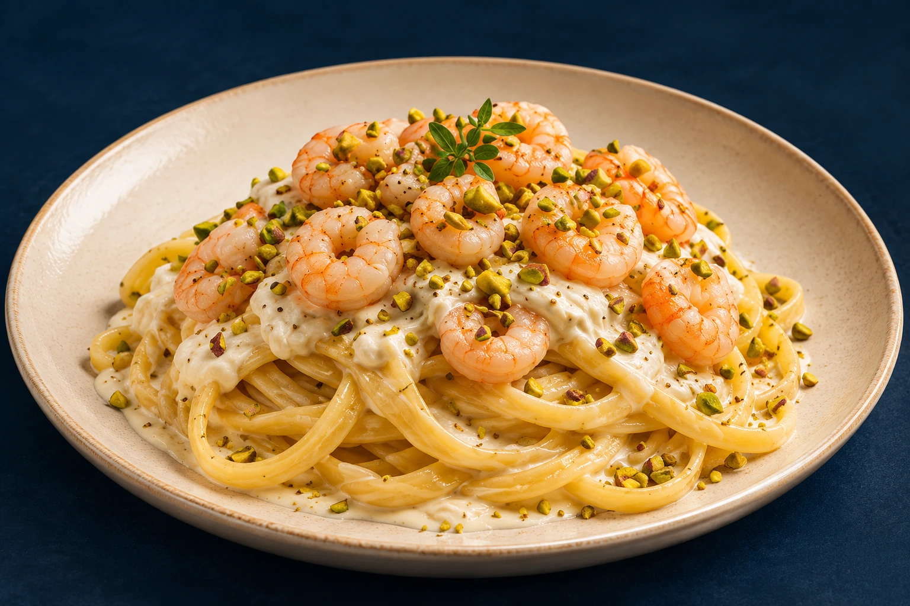
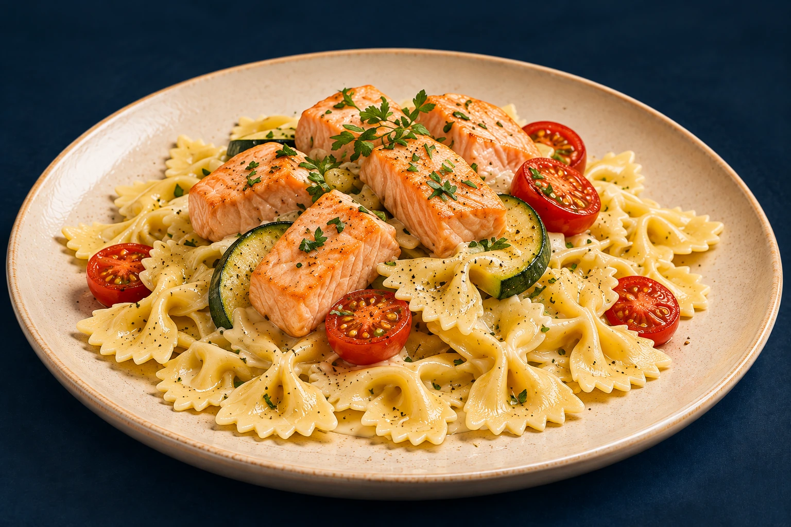
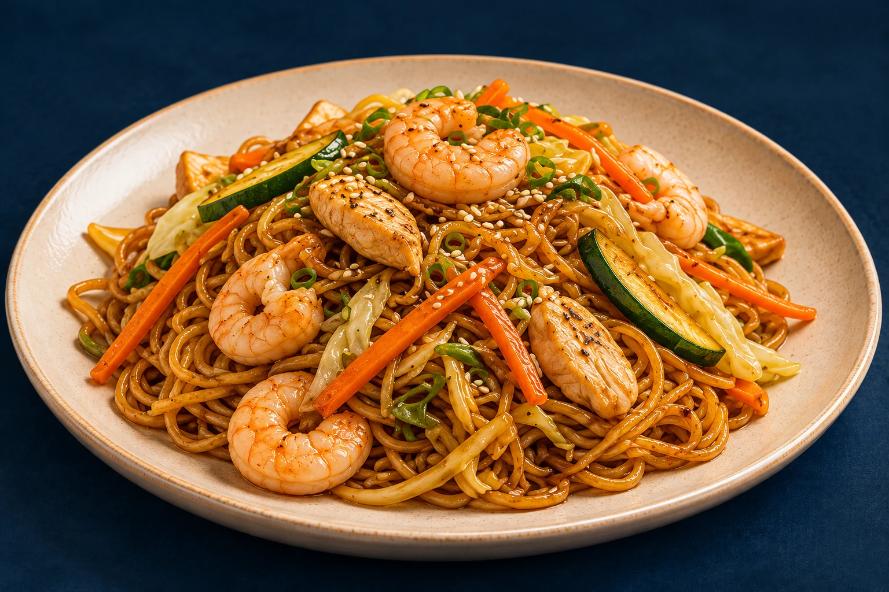
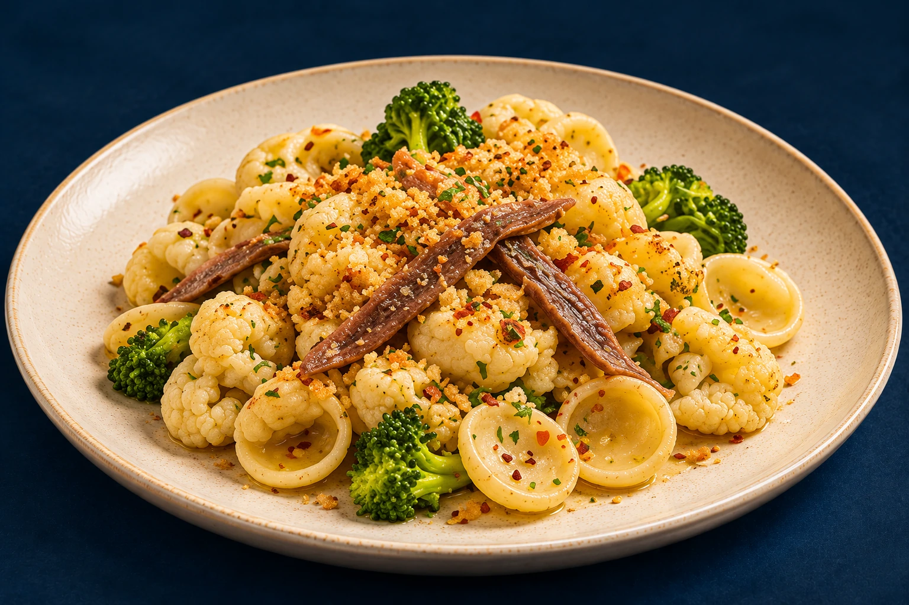
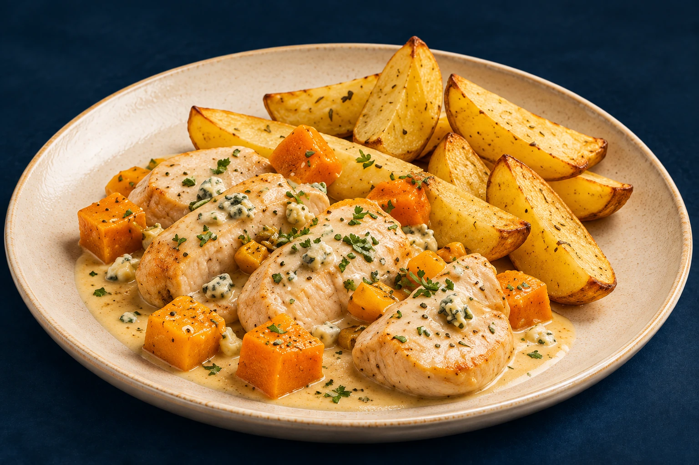
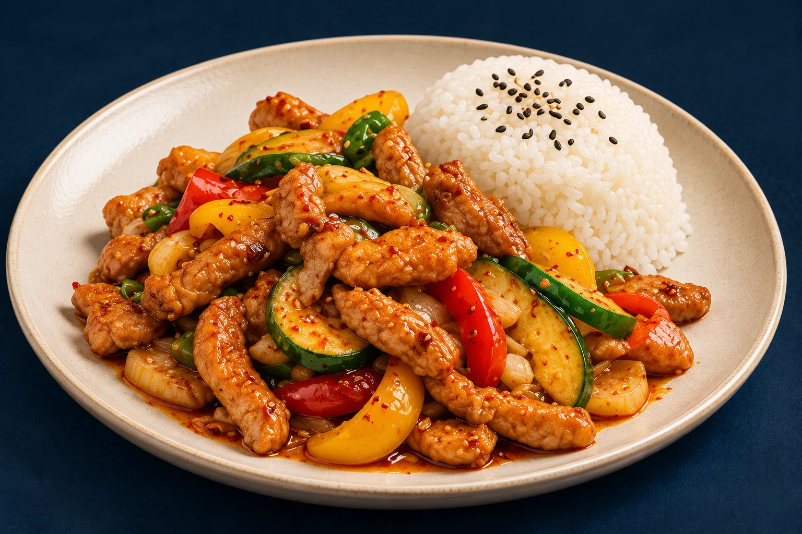
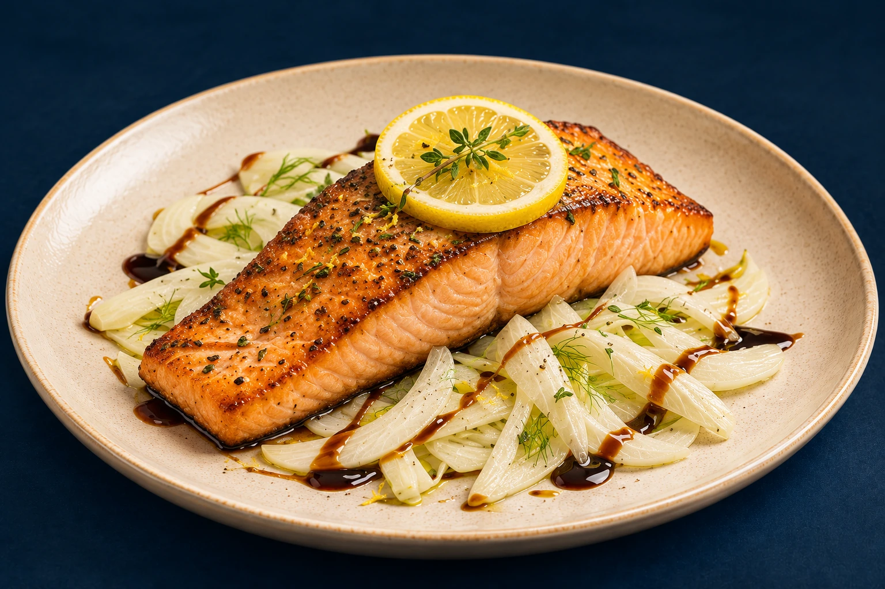

Linguine con stracciatella, pistacchi e gamberetti*
La cremosità delicata della stracciatella incontra i gamberetti*, con la nota croccante dei pistacchi.
01020708
Valido solo a pranzo,
nel giorno sotto indicato

La cremosità delicata della stracciatella incontra i gamberetti*, con la nota croccante dei pistacchi.
01020708

Il salmone fresco si abbina alla dolcezza delle zucchine e alla vivacità dei pomodori, con un leggero velo di panna.
010407

Verdure croccanti, pollo e gamberetti* si intrecciano agli spaghetti di soia, con carote, zucchine e verza.
0206

La dolcezza delle verdure incontra il carattere delle acciughe e la croccantezza del pangrattato, con una lieve nota piccante.
0104

La dolcezza della zucca stempera il sapore deciso del gorgonzola, con le patate ad accompagnare il pollo.
07

La salsa piccante ravviva il maiale e le verdure, mentre il riso bianco al vapore ne bilancia i sapori.

La freschezza del limone e la croccantezza del finocchio crudo accompagnano il salmone, con una nota di aceto balsamico.
04
Le immagini dei piatti, pur realistiche, sono generate con intelligenza artificiale e hanno scopo illustrativo.
Attendere la conferma del Ristorante per considerare valido l’ordine.
Persone indicate nelle richieste via WhatsApp: 0
Dato indicativo: richieste avviate, non prenotazioni confermate. Azzeramento ogni giorno alle 15:00.